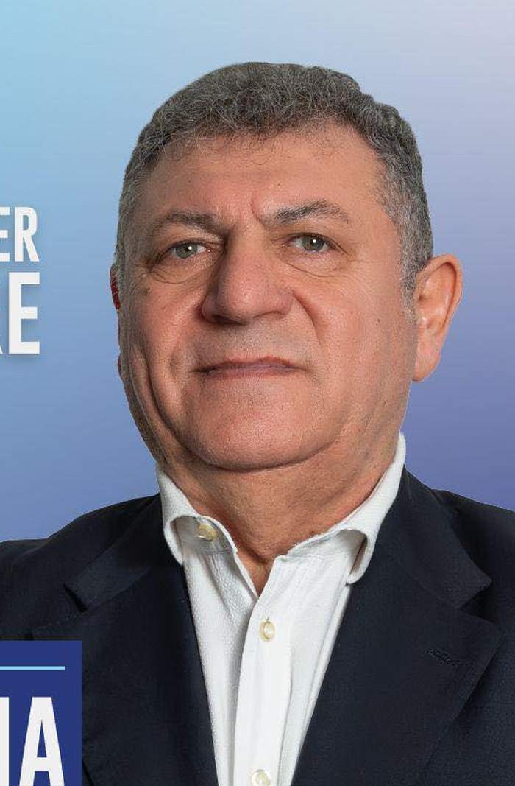
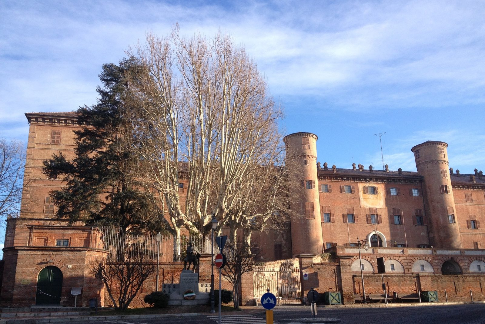
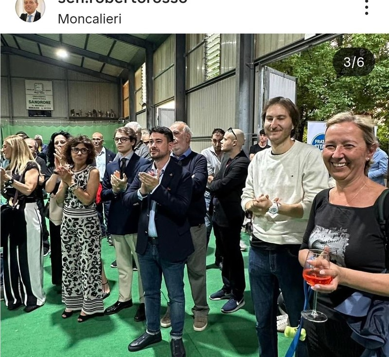
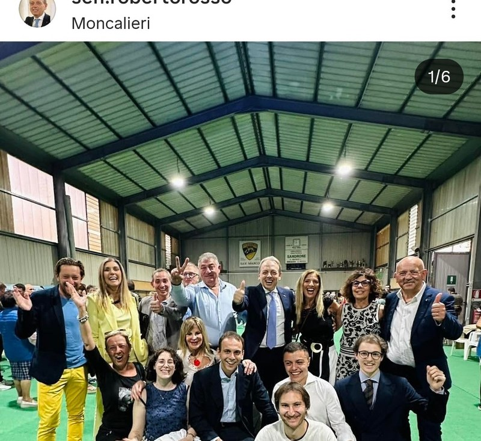

01
Radici
Sono di Moncalieri. La conosco. La vivo. Niente candidati calati dall'alto: chi siede in Comune deve sapere cosa succede in via Cavour alle otto di sera e in Borgo Aje alle sei del mattino.
Porto in Consiglio Comunale di Moncalieri la voce di chi questa città la vive ogni giorno. Nato qui. Cresciuto qui.
Al voto tra
Sono nato qui, ho fatto le scuole qui, conosco i quartieri e le persone. Non porto risposte già pronte — le risposte buone si trovano ascoltando prima.
Studio Odontoiatria all'Università di Torino. Faccio parte del Rotaract Torino Ovest. Sono Vice Segretario Provinciale di Forza Italia Giovani a Torino. Tutto questo mi ha insegnato una cosa sola: il servizio agli altri è una scelta che si fa ogni giorno, non uno slogan da campagna elettorale.
Mi candido al Consiglio Comunale perché Moncalieri merita una voce diversa. Non quella di chi siede sullo stesso banco da troppi anni. Quella di chi la città la vive dall'altra parte del banco — dal basso, dal quartiere, dalla strada.
Per aspera ad astra. È il mio motto da sempre. Le cose difficili si affrontano, non si evitano. Presentarsi al primo banco di prova senza esperienza pregressa, con un foglio pulito e tanta voglia di fare, è una delle cose più difficili che conosca. Valeva la pena provarci.
Nato e cresciuto a Moncalieri. Conosce la città dall'interno, non dai rapporti.
Non parte dalle risposte. Parte dalle domande dei cittadini.
Consiglio Comunale aperto a chi non ci ha mai messo piede. Una prospettiva nuova.
"Le stesse facce in Consiglio Comunale da troppi anni. Moncalieri merita una visione diversa."
— Damiano Coccioli
Tre principi che orientano questa candidatura. Non sono parole vuote: sono il modo in cui voglio sedermi al banco del Consiglio Comunale.
Sono di Moncalieri. La conosco. La vivo. Niente candidati calati dall'alto: chi siede in Comune deve sapere cosa succede in via Cavour alle otto di sera e in Borgo Aje alle sei del mattino.
Non parto dalle risposte. Parto dalle domande. La politica utile si fa così: tra le persone, nelle scuole, nei mercati, davanti ai bar, dentro le associazioni che tengono in piedi questa città.
Una prospettiva diversa dentro una squadra seria. Non basta essere giovani — bisogna essere pronti. Studio, ascolto e ho una visione chiara: Moncalieri può tornare a guardare avanti.
Per aspera ad astra.
Attraverso le difficoltà, fino alle stelle.
Una candidatura non si porta da soli. Forza Italia Moncalieri presenta una squadra con radici locali, esperienze diverse e una visione chiara per il dopo-Montagna.
Candidato Consigliere Comunale
28 anni, nato e cresciuto a Moncalieri. Studente di Odontoiatria, volontario Rotaract Torino Ovest, Vice Segretario Provinciale di Forza Italia Giovani Torino.
Candidata Consigliere Comunale
Insegnante presso l'Istituto Comprensivo Centro Storico di Moncalieri. Una vita nella scuola pubblica e accanto alle famiglie della città.

Candidato Sindaco · Centrodestra
Imprenditore, sostenuto dalla coalizione di centrodestra unita: Forza Italia, Fratelli d'Italia, Lega, UDC, Noi Moderati. La svolta per Moncalieri dopo decenni della stessa amministrazione.
"Damiano rappresenta la freschezza e l'impegno della nuova Forza Italia. Un giovane preparato, radicato nel territorio, pronto a portare il suo contributo in Consiglio Comunale. Lo sostengo con convinzione."
Sen. Roberto Rosso ↗ Scheda Senato
Vicepresidente Gruppo FI al Senato · Segretario Provinciale di Torino di Forza Italia
Una città vera: né periferia, né museo. Con un'identità da rivendicare e un futuro da costruire.
Elettori chiamati al voto — 54 seggi sul territorio
Anno di fondazione, dai cittadini di Testona
Castello Reale tra le Residenze Sabaude
Il fiume, il Sangone, le colline boscose
Moncalieri non è una periferia dormitorio. È la prima città della cintura torinese, una delle più popolose del Piemonte, con un'economia forte nell'automotive e nel design, un Castello che fu dimora dei re di Savoia, e il Po che la attraversa.
Eppure qualcosa manca, nei quartieri e nelle piazze: qualcuno che ascolti davvero. I problemi del centro storico — vetrine vuote, viabilità — arrivano in Consiglio Comunale già filtrati. I problemi dei borghi — manutenzione, illuminazione, rifiuti, trasporti — arrivano in ritardo. Spesso non arrivano affatto.
Conosco questa città dall'interno. Non dai report. La conosco perché ci vivo.
«A i é gnente da feje. Moncalié a l'é Moncalié.» — un piemontese vero non ha bisogno di slogan.«Moncalieri Cambia!» — il programma della coalizione di centrodestra che sostiene Maurizio Fontana per Sindaco. 14 priorità concrete, scritte da chi conosce la città. Lo porto al banco del Consiglio Comunale.
Ripartire dal centro: Piazza Vittorio ritorna a vivere. Le vetrine si riempiono, gli eventi tornano, il commercio respira.
Sicurezza vera, non slogan. Più luci, più controlli, presenza costante. E ascolto reale dei borghi.
Cura del territorio dalle colline al Po. Filiera locale. Una città moderna, pulita, pet friendly.
Scuole sicure. Spazi per i giovani. Sport accessibile. Tre pilastri per chi inizia, in un Comune che li ascolta.
Eventi, teatro, identità. Una Moncalieri che usa la sua storia per costruire comunità — non solo per ricordarla.
Mobilità intelligente. Città accessibile. Pari opportunità reali. Servizi che funzionano per tutti i cittadini.
Il programma completo della coalizione di centrodestra che sostiene Maurizio Fontana per Sindaco.
Leggi il programma →Le priorità che porterò in Consiglio Comunale dal primo giorno, in coerenza con il programma del centrodestra.
Leggi le priorità →
Una Residenza Sabauda riconosciuta dall'UNESCO non può essere solo una cartolina. Il Castello dev'essere il cuore vivo di Moncalieri: aperto alle scuole, alle famiglie, alle associazioni. Più eventi, più visite, più partecipazione — non solo turismo di passaggio.
«Una città che non valorizza la propria storia non costruisce il proprio futuro.»
Domenica 24 maggio (7:00–23:00) e lunedì 25 maggio (7:00–15:00). Porta tessera elettorale e documento d'identità.
Sulla scheda per il Consiglio Comunale, traccia una X sul simbolo di Forza Italia Moncalieri.
Nel primo riquadro delle preferenze, scrivi in stampatello COCCIOLI.
Nel secondo riquadro puoi scrivere CURATOLA. Uomo + donna = doppia preferenza valida per legge.
Schema illustrativo. La grafica reale della scheda può variare.
Attenzione alla doppia preferenza
In Italia, nei comuni sopra i 15.000 abitanti come Moncalieri, le due preferenze devono essere di genere diverso. Se scrivi due nomi dello stesso sesso, la seconda preferenza viene annullata. Coccioli + Curatola = combinazione corretta.
Cosa portare ai seggi
Cosa sta succedendo nelle ultime settimane di campagna. Aggiornato dal team fino al silenzio elettorale del 23 maggio.

Evento21 maggio 2026 · Bocciofila San Marco
Giovedì sera la chiusura della campagna di Maurizio Fontana alla Bocciofila San Marco. Sul palco Giovanni Donzelli (FdI), Riccardo Molinari (Lega) e il Presidente del Piemonte Alberto Cirio (Forza Italia).
Vedi su Instagram
Squadra19 maggio 2026
Presentata ufficialmente la lista di Forza Italia per il Consiglio Comunale di Moncalieri. Damiano Coccioli e Paola Curatola tra i candidati di una squadra che unisce esperienza e rinnovamento.
Vedi su Instagram25 marzo 2026
Damiano Coccioli annuncia la candidatura al Consiglio Comunale: «Mi candido perché Moncalieri merita una visione diversa, dopo anni delle stesse facce in Consiglio».
Vedi su InstagramMancano poche ore al voto. Ogni azione conta. Scegli la tua.
Manda il link di questa pagina a parenti, amici, vicini di casa. Un messaggio WhatsApp è gratis e può cambiare un voto.
Condividi su WhatsAppHai un'ora? Aiuta al seggio, ai gazebo, sui social. Lasciamo i tuoi contatti, ti diciamo cosa serve nei prossimi giorni.
Newsletter brevi, solo quando c'è qualcosa da dire davvero. Nessuno spam — promesso.
Una domanda, una proposta per un quartiere, una critica costruttiva. Si legge tutto.